pre-scale-lock, branch s/H-040-arena-stage1, not landed
Side A blue, side B red. Answer in verdicts.md: | id | verdict | feedback | with verdict A, B, draw or deny.
L-0049 seed 1 pair: 16:16
predict: draw DRAFT (Architect to confirm): the two sides are equal in number and kind with no ground between them, so neither should win.
winner: draw survivors: 4:4 ticks: 12000 (capped)
agree
verdict: -
tick 0 A 16 B 16tick 800 A 16 B 16tick 1600 A 13 B 13tick 2400 A 5 B 5tick 3200 A 4 B 4tick 4000 A 4 B 4tick 4800 A 4 B 4tick 5600 A 4 B 4tick 6400 A 4 B 4tick 7200 A 4 B 4
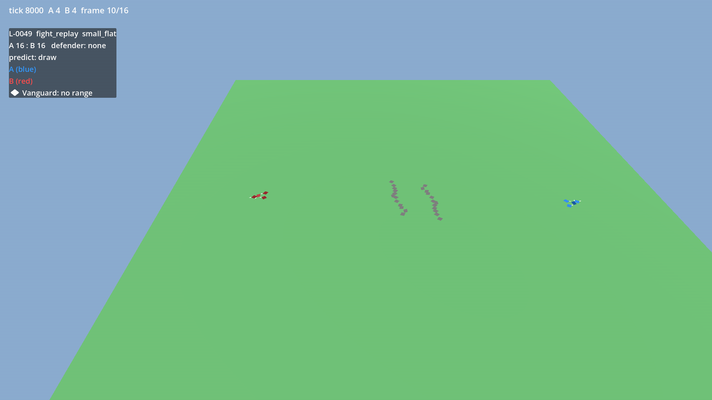
tick 8000 A 4 B 4tick 8800 A 4 B 4tick 9600 A 4 B 4tick 10400 A 4 B 4tick 11200 A 4 B 4
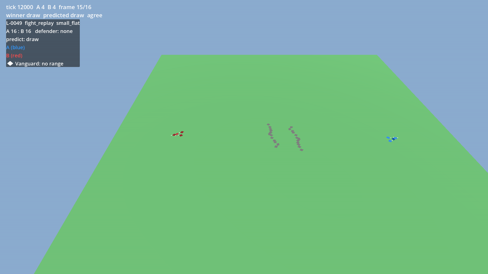
tick 12000 A 4 B 4
fall map tick 12000 A 4 B 4
L-0050 seed 1 pair: 16:32
predict: B DRAFT (Architect to confirm): side B has more Vanguards and nothing on the open field favours the other side, so side B wins.
winner: B survivors: 0:29 ticks: 1609
agree
verdict: -
tick 0 A 16 B 32tick 100 A 16 B 32tick 200 A 16 B 32tick 300 A 16 B 32tick 400 A 16 B 32tick 500 A 16 B 32tick 600 A 16 B 32tick 700 A 15 B 32tick 800 A 14 B 32tick 900 A 12 B 32tick 1000 A 11 B 32tick 1100 A 10 B 31tick 1200 A 6 B 31tick 1300 A 6 B 31tick 1400 A 5 B 31tick 1500 A 2 B 29tick 1600 A 1 B 29
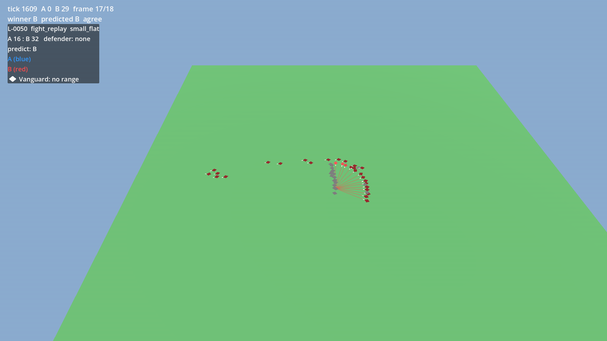
tick 1609 A 0 B 29
fall map tick 1609 A 0 B 29
L-0051 seed 1 pair: 32:16
predict: A DRAFT (Architect to confirm): side A has more Vanguards and nothing on the open field favours the other side, so side A wins.
winner: A survivors: 29:0 ticks: 1609
agree
verdict: -
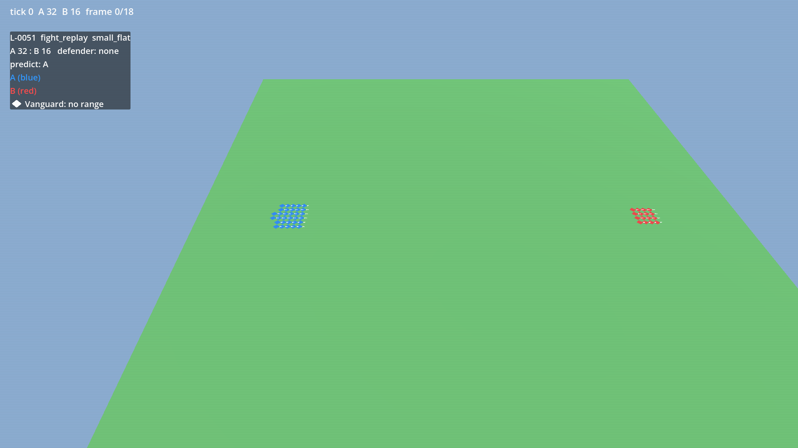
tick 0 A 32 B 16tick 100 A 32 B 16tick 200 A 32 B 16tick 300 A 32 B 16tick 400 A 32 B 16tick 500 A 32 B 16tick 600 A 32 B 16tick 700 A 32 B 15tick 800 A 32 B 14tick 900 A 32 B 12tick 1000 A 32 B 11tick 1100 A 31 B 10tick 1200 A 31 B 6tick 1300 A 31 B 6tick 1400 A 31 B 5
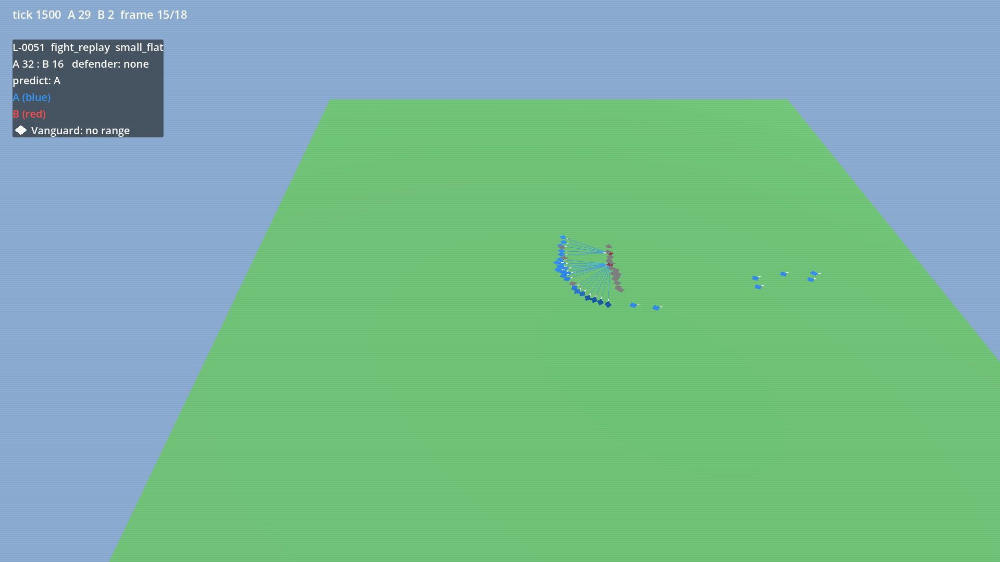
tick 1500 A 29 B 2tick 1600 A 29 B 1tick 1609 A 29 B 0
fall map tick 1609 A 29 B 0
L-0052 seed 1 pair: 8:64
predict: B DRAFT (Architect to confirm): side B has more Vanguards and nothing on the open field favours the other side, so side B wins.
winner: B survivors: 0:64 ticks: 807
agree
verdict: -
tick 0 A 8 B 64tick 100 A 8 B 64
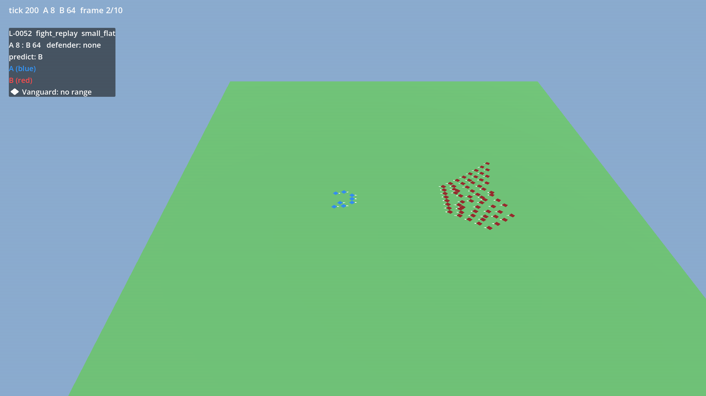
tick 200 A 8 B 64
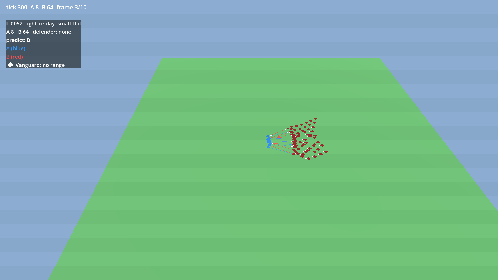
tick 300 A 8 B 64tick 400 A 8 B 64tick 500 A 8 B 64tick 600 A 5 B 64tick 700 A 4 B 64tick 800 A 1 B 64tick 807 A 0 B 64
fall map tick 807 A 0 B 64
L-0053 seed 1 pair: 64:8
predict: A DRAFT (Architect to confirm): side A has more Vanguards and nothing on the open field favours the other side, so side A wins.
winner: A survivors: 64:0 ticks: 807
agree
verdict: -
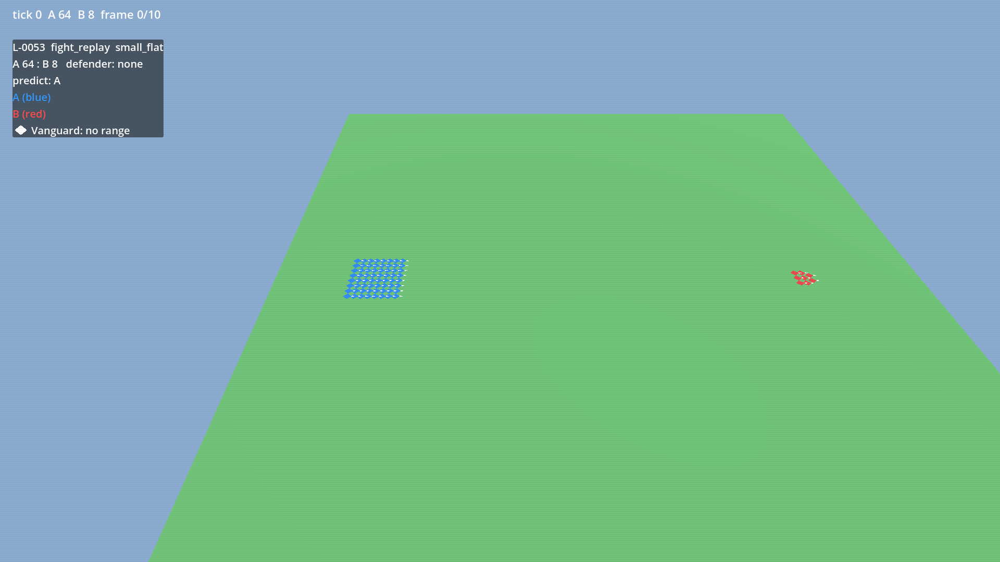
tick 0 A 64 B 8tick 100 A 64 B 8
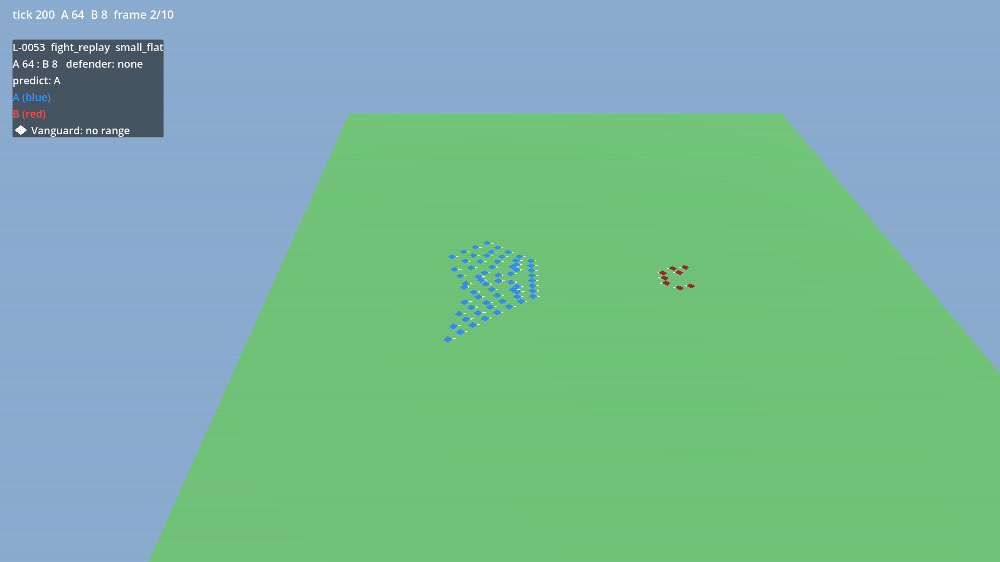
tick 200 A 64 B 8tick 300 A 64 B 8tick 400 A 64 B 8tick 500 A 64 B 8tick 600 A 64 B 5
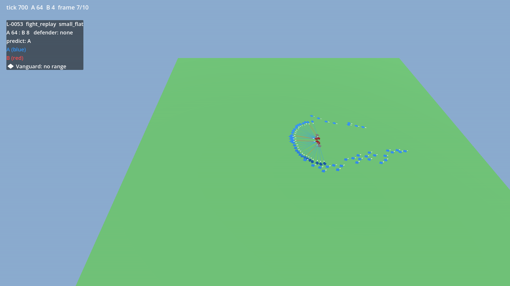
tick 700 A 64 B 4tick 800 A 64 B 1tick 807 A 64 B 0
fall map tick 807 A 64 B 0
L-0054 seed 1 pair: 128:128
predict: draw DRAFT (Architect to confirm): the two sides are equal in number and kind with no ground between them, so neither should win.
tick 2400 A 87 B 87tick 3200 A 70 B 70tick 4000 A 57 B 57
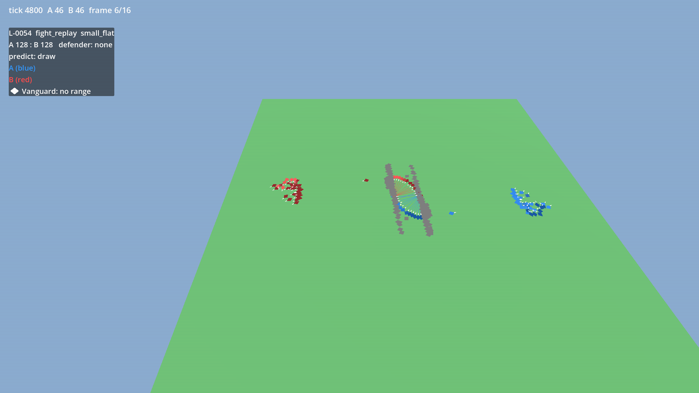
tick 4800 A 46 B 46tick 5600 A 43 B 43tick 6400 A 40 B 40tick 7200 A 40 B 40tick 8000 A 39 B 39tick 8800 A 39 B 39tick 9600 A 39 B 39tick 10400 A 39 B 39tick 11200 A 39 B 39